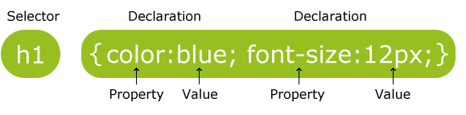
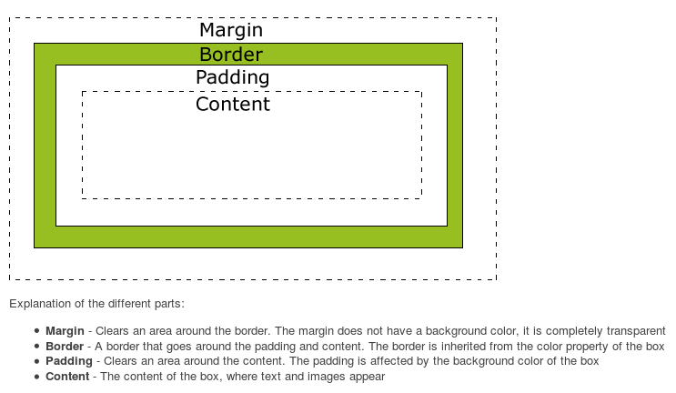
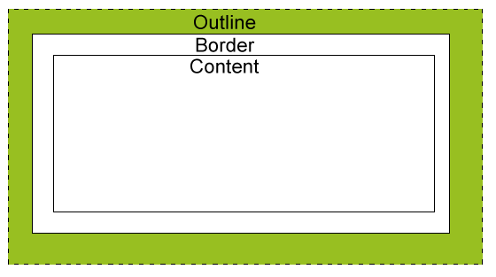

tutorial
Table of Contents
- 1. Styles Solved a Big Problem
- 2. What is CSS?
- 3. Syntax
- 4. Example
- 5. Comments
- 6. Selectors
- 7. Backgrounds
- 8. Text
- 9. Fonts
- 10. Links
- 11. Lists
- 12. Tables
- 13. Box Model(important)
- 14. Border
- 15. Outlines
- 16. Margin
- 17. Padding
- 18. Dimension
- 19. Display and Visibility
- 20. Positioning (This is what I want to define my layout)
- 21. Float
- 22. Align
- 23. Combinators
- 24. Pseudo-classes
- 25. Pseudo-elements
- 26. Navigation Bar
- 27. Image Opacity
- 28. Image Sprite
- 29. Media Types
- 30. Attr Selectors
1 Styles Solved a Big Problem
HTML was never intended to contain tags for formatting a document.
HTML was intended to define the content of a document.
All formatting could be removed from the HTML document, and stored in a separate CSS file.
2 What is CSS?
CSS stands for Cascading Style Sheets
Styles define how to display HTML elements
External Style Sheets can save a lot of work
External Style Sheets are stored in CSS files
3 Syntax
A CSS rule set consists of a selector and a declaration block:

The selector points to the HTML element you want to style.
The declaration block contains one or more declaration separated by semicolons.
Each declaration includes a property name and a value, separated by a colon.
4 Example
p {
color: red;
text-align: center;
}
A CSS declaration always ends with a semicolon, and declaration groups are surrounded by curly braces.
5 Comments
* *
6 Selectors
CSS selectors are used to "find" (or select) HTML elements based on their id, classes, types, attributes, values of attributes and much more.
6.1 The element Selector
The element selector selects elements based on the element name.
Example:
p {
text-align: center;
color: red;
}
6.2 The id Selector
The id selector uses the id attribute of an HTML tag to find the specific element.
An id should be unique within a page, so you should use the id selector when you want to find a single, unique element.
To find an element with a specific id, write a hash character, followed by the id of the element.
Example:
#para1 {
text-align: center;
color: red;
}
6.3 The class Selector
The class selector finds elements with the specific class.
The class selector uses the HTML class attribute.
To find elements with a specific class, write a period character, followed by the name of the class:
Example:
.center {
text-align: center;
color: red;
}
p.center {
text-align:center;
color:red;
}
6.4 Grouping Selectors
To group selectors, separate each selector with a comma.
Example:
h1 {
text-align: center;
color: red;
}
h2 {
text-align: center;
color: red;
}
p {
text-align: center;
color: red;
}
h1, h2, p {
text-align: center;
color: red;
}
7 Backgrounds
CSS properties used for background effects:
background-color: #eeeeee|gray;
background-image: url("url");
background-repeat: repeat-x|repeat-y|no-repeat;
background-attachment: scroll|fixed|local|initial|inherit;
background-position: center|top;
7.1 Background - Shorthand property
background: #ffffff url("img_tree.png") no-repeat right top;
When using the shorthand property the order of the property values is:
background-color
background-image
background-repeat
background-attachment
background-position
8 Text
8.1 Color
color: blue;
8.2 Alignment
text-align: center|right|justify;
8.3 Decoration
text-decoration: none|overline|line-through|underline;
8.4 Transformation
text-transform: uppercase|lowercase|capitalize;
8.5 Indentation
text-indent: 50px;
9 Fonts
CSS font properties define the font family, boldness, size, and the style of a text.
9.1 Font Famlies
here are two types of font family names:
| generic family | a group of font families with a similar look (like "Serif" or "Monospace") |
| font family | a specific font family (like "Times New Roman" or "Arial") |
9.2 Font Family
font-family: "Times New Roman", Times, serif;
If the browser does not support the first font, it tries the next font.
9.3 Font Style
font-style: normal|italic|oblique;
9.4 Font Size
font-size: 40px;
font-size: 2.5em; * 40px/16=2.5em *
The default text size in browsers is 16px. So, the default size of 1em is 16px.
9.5 Use a Combination of Percent and Em
The solution that works in all browsers, is to set a default font-size in percent for the <body> element:
body {
font-size: 100%;
}
h1 {
font-size: 2.5em;
}
10 Links
Links can be styled with any CSS property (e.g. color, font-family, background, etc.).
In addition, links can be styled differently depending on what state they are in.
The four links states are:
a:link - a normal, unvisited link
a:visited - a link the user has visited
a:hover - a link when the user mouses over it
a:active - a link the moment it is clicked
10.1 Color
* unvisited link *
a:link {
color: #FF0000;
}
* visited link *
a:visited {
color: #00FF00;
}
* mouse over link *
a:hover {
color: #FF00FF;
}
* selected link *
a:active {
color: #0000FF;
}
10.2 Text Decoration
a:link {
text-decoration: none;
}
a:visited {
text-decoration: none;
}
a:hover {
text-decoration: underline;
}
a:active {
text-decoration: underline;
}
10.3 Brckground Color
a:link {
background-color: #B2FF99;
}
a:visited {
background-color: #FFFF85;
}
a:hover {
background-color: #FF704D;
}
a:active {
background-color: #FF704D;
}
11 Lists
The CSS list properties allow you to: set list item markers
11.1 Different List Item Markers
ul.a {
list-style-type: circle;
}
ul.b {
list-style-type: square;
}
ol.c {
list-style-type: upper-roman;
}
ol.d {
list-style-type: lower-alpha;
}
11.2 An Image as The List Item Marker
list-style-image: url('sqpurple.gif');
12 Tables
12.1 Table Borders
table, th, td {
border: 1px solid black;
}
12.2 Collapse Borders
The border-collapse property sets whether the table borders are collapsed into a single border or separated:
table {
border-collapse: collapse;
}
table, th, td {
border: 1px solid black;
}
12.3 Table Width and Height
table {
width: 100%;
}
th {
height: 50px;
}
12.4 Table Text Alignment
td {
text-align: right;
}
td {
height: 50px;
vertical-align: bottom;
}
12.5 Table Padding
td {
padding: 15px;
}
12.6 Table Color
table, td, th {
border: 1px solid green;
}
th {
background-color: green;
color: white;
}
13 Box Model(important)

Important: When you set the width and height properties of an element with CSS, you just set the width and height of the content area.
Example:
div {
width: 220px;
padding: 10px;
border: 5px solid gray;
margin: 0px;
}
14 Border
14.1 Border Style
border-style: none|dashed|solid|double|groove|ridge|inset|outset;
14.2 Border Width
border-width: 5px|thin|medium|thick;
14.3 Border Color
border-color: red|#eeeeee;
14.4 Border - Individual sides
p {
border-top-style: dotted;
border-right-style: solid;
border-bottom-style: dotted;
border-left-style: solid;
}
14.5 Border - Shorthand property
p {
border: 5px solid red;
}
width, style, color
15 Outlines
An outline is a line that is drawn around elements (outside the borders) to make the element "stand out".
The outline is not a part of an element's dimensions; the element's total width and height is not affected by the width of the outline.

outline
outline-color
outline-style
outline-width
16 Margin
p {
margin-top: 100px;
margin-bottom: 100px;
margin-right: 150px;
margin-left: 50px;
}
17 Padding
p {
padding-top: 25px;
padding-bottom: 25px;
padding-right: 50px;
padding-left: 50px;
}
18 Dimension
The CSS dimension properties allow you to control the height and width of an element.
height:10px;5%;
max-height:10px;5%;
min-height:10px;5%;
width:10px;5%;
max-width:10px;5%;
min-width:10px;5%;
Example:
p.ex
{
height:100px;
width:100px;
}
19 Display and Visibility
The display property specifies if/how an element is displayed, and the visibility property specifies if an element should be visible or hidden.
19.1 Hiding an Element - display:none or visibility:hiden
difference:
visibility:hidden hides an element, but it will still take up the same space as before. The element will be hidden, but still affect the layout.
display:none hides an element, and it will not take up any space. The element will be hidden, and the page will be displayed as if the element is not there.
Example:
h1.hidden {
visibility: hidden;
}
h1.hidden {
display: none;
}
19.2 Display - Block and Inline Elements
A block element is an element that takes up the full width available, and has a line break before and after it.
An inline element only takes up as much width as necessary, and does not force line breaks.
19.3 Changing How an Element is Displayed
li {
display: inline;
}
span {
display: block;
}
Note: Setting the display property of an element only changes how the element is displayed, NOT what kind of element it is.
So, an inline element with display:block is not allowed to have other block elements inside of it.
20 Positioning (This is what I want to define my layout)
20.1 Static Positioning
HTML elements are positioned static by default.
A static positioned element is always positioned according to the normal flow of the page.
Static positioned elements are not affected by the top, bottom, left, and right properties.
20.2 Fixed Positioning
An element with fixed position is positioned relative to the browser window.
It will not move even if the window is scrolled.
Fixed positioned elements are removed from the normal flow.
The document and other elements behave like the fixed positioned element does not exist.
Fixed positioned elements can overlap other elements.
Example:
p.pos_fixed {
position: fixed;
top: 30px;
right: 5px;
}
20.3 Relative Positioning
A relative positioned element is positioned relative to its normal position.
The content of relatively positioned elements can be moved and overlap other elements, but the reserved space for the element is still preserved in the normal flow.
Example
h2.pos_right {
position: relative;
left: 20px;
}
20.4 Absolute Positioning
An absolute position element is positioned relative to the first parent element that has a position other than static.
If no such element is found, the containing block is <html>.
Absolutely positioned elements are removed from the normal flow.
The document and other elements behave like the absolutely positioned element does not exist.
Absolutely positioned elements can overlap other elements.
Example:
h2 {
position: absolute;
left: 100px;
top: 150px;
}
20.5 Overlapping Elements
When elements are positioned outside the normal flow, they can overlap other elements.
The z-index property specifies the stack order of an element (which element should be placed in front of, or behind, the others).
An element with greater stack order is always in front of an element with a lower stack order.
img {
position: absolute;
left: 0px;
top: 0px;
z-index: -1;
}
21 Float
With CSS float, an element can be pushed to left or right, allowing other element to wrap around it.
21.1 How Element Float
Elements are floated horizontally, this means that an element can only be floated left or right, not up or down.
The elements after the floating element will flow around it.
The element before the floating element will not be affected.
If an image is floated to right, a following text flows around it, to the left.
21.2 Floating Elements Next to Each Other
If you place several floating elements after each other, they will float next to each other if there is room.
.thumbnail {
float: left;
width: 110px;
height: 90px;
margin: 5px;
}
21.3 Turning off Float - Using Clear
Elements after the floating element will flow around it. To avoid this, use the clear property.
.text_line {
clear: both;
}
22 Align
22.1 Center Aligning Using the margin Property
Block elements can be center-aligned by setting the left and right margins to "auto".
.center {
margin-left: auto;
margin-right: auto;
width: 70%;
background-color: #b0e0e6;
}
22.2 Left and Right Aligning Using the position Property
22.3 Left and Right Aligning Using the float Property
23 Combinators
23.1 Descendant Selector
The descendant selector matches all element that are descendants of a specified element.
The following example selects all <p> elements inside <div> elements:
div p {
background-color: yellow;
}
23.2 Child Selector
The child selector selects all elements that are the immediate children of a specified element.
The following example selects all <p> elements that are immediate children of a <div> element:
div > p {
background-color: yellow;
}
23.3 Adjacent Sibling Selector
The adjacent sibling selector selects all elements that are the adjacent siblings of a specified element.
Sibling elements must have the same parent element, and "adjacent" means "immediately following".
The following example selects all <p> elements that are placed immediately after <div> elements:
div + p {
background-color: yellow;
}
23.4 General Sibling Selector
The general sibling selector selects all elements that are siblings of a specified element.
The following example selects all <p> elements that are siblings of <div> elements:
div ~ p {
background-color: yellow;
}
24 Pseudo-classes
Css pseudo-classes are used to add special effects to some selectors.
24.1 Syntax (:)
The syntax of pseudo-classes:
selector:pseudo-class {
property:value;
}
CSS classes can also be used with pseudo-classes:
selector.class:pseudo-class {
property:value;
}
24.2 Anchor Pseudo-classes
a:link {
color: #FF0000;
}
24.3 Pseudo-classes and CSS Classes
CSS:
a.red.visited {
color: #FF0000;
}
HTML:
<a class="red" href="css_syntax.asp">CSS Syntax</a>
24.4 The :first-child Pseudo-class
The :first-child pseudo-class matches a specified element that is the first child of another element.
24.4.1 Match the first <p> element
p:first-child {
color: blue;
}
24.4.2 Match the first <i> element in all <p> elements
p > i:first-child {
color: blue;
}
24.4.3 Match all <i> element in all first child <p> elements
p:first-child i {
color: blue;
}
24.5 The :lang Pseudo-class
The :lang pseudo-class allows you to define special rules for different languages.
<html>
<head>
<style>
q:lang(no) {
quotes: "~" "~";
}
</style>
</head>
<body>
<p>Some text <q lang="no">A quote in a paragraph</q> Some text.</p>
</body>
</html>
25 Pseudo-elements
CSS pseudo-elements are used to add special effects to some selectors. (same with pseudo-class)
25.1 Syntax (similar to pseudo-class)
The syntax of pseudo-elements:
selector::pseudo-element {
property:value;
}
CSS classes can also be used with pseudo-elements:
selector.class::pseudo-element {
property:value;
}
25.2 The ::first-line Pseudo-element
The ::first-line pseudo-element is used to add a special style to the first line of a text.
The ::first-line pseudo-element can only be applied to block-level elements.
Example:
p::first-line {
color: #ff0000;
font-variant: small-caps;
}
25.3 The ::first-letter Pseudo-element (similar)
25.4 The ::before Pseudo-element
The ::before pseudo-element can be used to insert some content before the content of an element.
The following example inserts an image before each <h1> element:
Example
h1::before {
content: url(smiley.gif);
}
25.5 The ::after Pseudo-element (similar)
26 Navigation Bar
26.1 Navigation Bar = List of Links
A navigation bar needs standard HTML as a base.
A navigation bar is basically a list of links.
27 Image Opacity
opacity: 0.4
28 Image Sprite
An image sprite is a collection of images put into a single image.